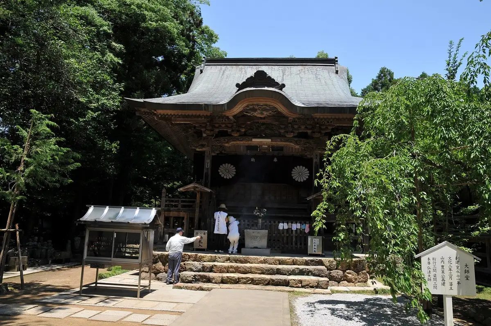
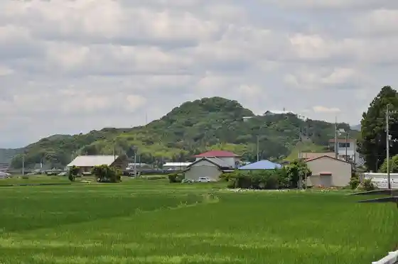
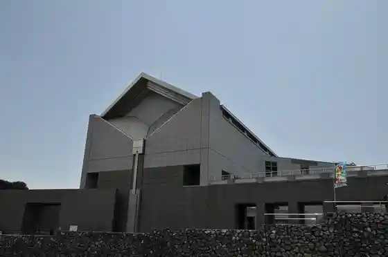
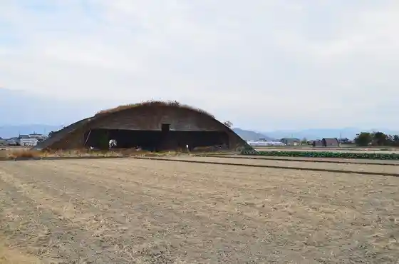

Nankoku
Nankoku · Kochi
Nankoku
Highlighted on the Kochi map.

Stay
Sazanshitei Hotel
Arubijinesu Hotel
Bijinesu Hotel Airport
Penshon O Yado
Nankoku Bijinesu Hotel
Dining
Kaida Ya
Takokuseki Shokudo Sabi to Susu
Unagi Tokoro Fuku
Tsukasa Kochi Kuko Mise
Uchinku no Shokutaku
Farm Resutoran Toriton
Kuni Maru Nankoku Mise
Keifuku Miya
Tori Kokoro Toriyaki Shokudo
Unagi Ryori
Kaferesuto Kaze Ryo Sato
Sandaime Yasube Nankoku Mise
ICHIBA
Borare
Monshierutonton
Resutoran'erieru
Experience
Roadside Station Nankoku Kaze Ryo Sato
Sights
Tosa Kokubunji
Oko Shiro

Kochi Prefectural Folk History Museum

Kochi Ryoma Airport
Maehama Entai Gun

Gomen Eki